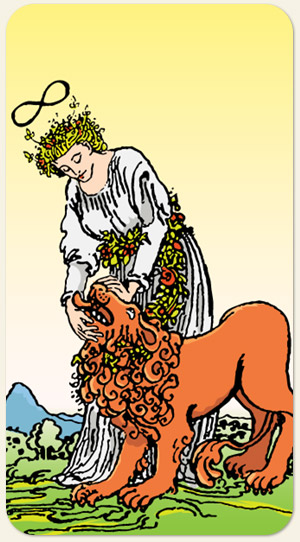

É o triunfo da mente espiritualizada sobre os desejos puramente animais. Elevação da mente sobre os instintos, o masculino e o feminino, equilíbrio entre força e leveza, sensualidade.
O gesto delicado de fechar a boca do leão demonstra o controle dos impulsos através do toque e do acolhimento, e não por correntes ou violência.
Se não se preservar e manter a língua para o lado de fora, a pessoa poderá se ferir ao não ceder ou por sofrer o impacto do outro.
Positivo: Força em todos os seus aspectos: físico, moral e espiritual. Vontade, coragem, capacidade de unir esforços para resolver um problema por vez.
Negativo: Violência, reatividade, sexualidade, instintos desenfreados.
Amor e Sexo: Pessoas que gostam de ser dominadas ou que gostam de dominar o outro, parceiro grande, parrudo, forte, soca fofo, ser água com açúcar, pessoa ou relação que não causa impacto, relações sexuais que causam dor.
Trabalho e Dinheiro: Trabalhar com animais que podem ser de grande porte ou até mesmo selvagens, taxidermista, atividade física, ocupações que demandam esforço físico. Dinheiro não tem muita expressão neste arcano, mas ele é muito associado com beleza, vaidade, aparência e status. Cuidar da aparência para chamar a atenção de forma positiva, dar uma repaginada na vitrine, beleza só de fachada, os materiais até possuem brilho mas são frágeis, ter que se esforçar muito para manter as aparências, ter um leão na barriga ou um no umbigo.
Espiritualidade: Poder pessoal, fonte de energia espiritual, socorro espiritual, uma fé sem força ou fragilizada, descrença, subjugação e dominação espiritual, ser domado pelo puritanismo, se achar o santo iluminado.
Símbolos: Mulher, Leminiscata, Leão, Coroa de Flores, Rosa Vermelha, Montanha.
Cores: Amarelo, Branco, Vermelho, Azul, Verde.
Elementos: Ar e Espírito.
Signos: Leão, Virgem, Escorpião, Sagitário e Libras.
Referências: Shiva e Samsara, a Bela e a Fera.